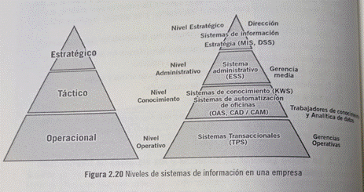
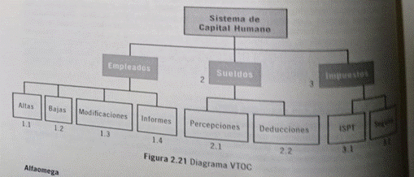

HIPO (Hierarchical Input Process Output) es una combinación de dos métodos
organizados para analizar el sistema y proporcionar técnicas de documentación. Fue desarrollado por la empresa IBM (International Business Machines Corporation) en el año 1970.
K. Laudon y J. Laudon en 1996 consideró que los sistemas de información pueden clasificarse en niveles jerárquicos donde se toman las decisiones para los soportes y estos son operacional, conocimiento, táctico y estratégico.

TIPOS DE DIAGRAMAS HIPO
VTOC o tabla visual de contenido (visual tables of contents)
· Diagramas generales IPO (INPUT/PROCESS/OUTPUT)
· Diagramas detallados IPO
VTOC (visual tables of contents)
Diagramas de jerarquías. Proporciona un mapa que permite localizar un módulo del programa dentro del sistema principal.
Es similar al típico diagrama de la estructura de organización
Diagramas generales IPO (INPUT/PROCESS/OUTPUT)
Estos tipos de diagramas permiten una visión global de la entrada, proceso y la salida. Es útil listar todas las entradas, los procesos y salidas en las tres secciones de papel, en la izquierda la entrada al centro el proceso y a la derecha la salida.

Fortalezas y debilidades del HIPO.
➢ Es una técnica altamente visual y algo estructurada para el diseño y documentación.
➢ Es una herramienta demasiado especializada. Por el desconocimiento en la
organización de su simbología.
➢ El HIPO se lleva una considerable cantidad de espacio en papel. Así los diagramas hijo
son usados más frecuente para representar los detalles de cada módulo en una gráfica
de estructura y para preparar el código de programa de computadora.
➢ El HIPO es útil para la documentación de programas. Porque con ello los autores
pueden fácilmente recordarse de sus trabajos, después de un largo tiempo. Y otros
programadores que comprendan los símbolos puedan entender lo realizado y ser
utilizados en las pláticas o conversaciones estructuradas.